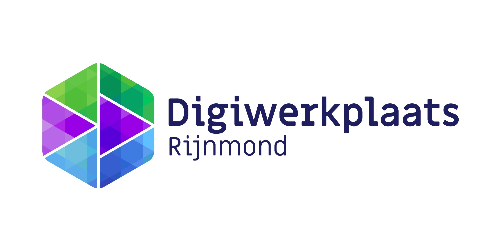

Inzicht in je site
Zie in één overzicht welke punten aandacht verdienen.

Vul een openbaar webadres in. SiteScan controleert technische basispunten en geeft concrete suggesties.
Je resultaten verschijnen hier na de scan.
Een goede websitecheck maakt verbeteringen overzichtelijk en behapbaar.
Zie in één overzicht welke punten aandacht verdienen.
Ontvang praktische suggesties in begrijpelijke taal.
Kies zelf waar je begint en verbeter stap voor stap.
Gebruik het openbare adres van je website.
SiteScan bekijkt de beschikbare websitegegevens.
Gebruik de resultaten als startpunt voor verbeteringen.
Na de scan zie je de uitkomsten overzichtelijk bij elkaar.
Je website gebruikt een beveiligde verbinding.
Bekijk of afbeeldingen sneller kunnen laden.
Illustratief voorbeeld — jouw scanresultaten kunnen anders zijn.
Start de scan en ontdek waar je verder kunt verbeteren.
Start je websitecheck